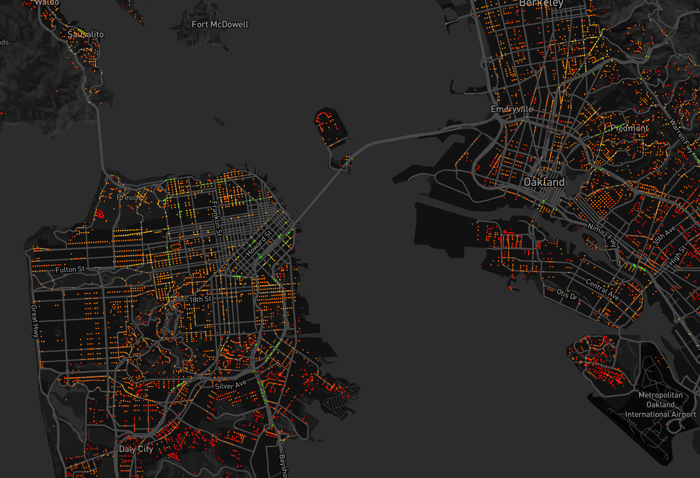

@morganherlocker
TileReduce
Parallel Spatial Analysis

...in javascript
or more specifically, node.js
Why node.js?
-
fast computation (vs Python)
-
algorithm friendly (vs SQL)
-
package management (vs C/C++)
-
zillions of libraries (vs everything)
a strength of node.js is that it is single threaded
...but that means cores spend time waiting around
TileReduce distributes spatial analysis across CPU cores
give TileReduce an area and it will split it into tiles
z7
The Map
...no, not that kind of map
each tile is processed through a map script
this is where the work gets done
-
count things
-
aggregate things
-
measure things
-
manipulate things
-
whatever you want

Data Sources
 raw
raw or
geojson
 remote
remote or
local
to scale:
- add more computers
- give each a low zoom tile
- tiles stack!
@mapbox + @openstreetmap
- changeset analysis
- finding bogus data
- vandalism detection
- machine learning (tiles fit models nicely)
- automated mapping (see above)
- understanding large datasets quickly
MIT
https://github.com/
mapbox/
tile-reduce

???